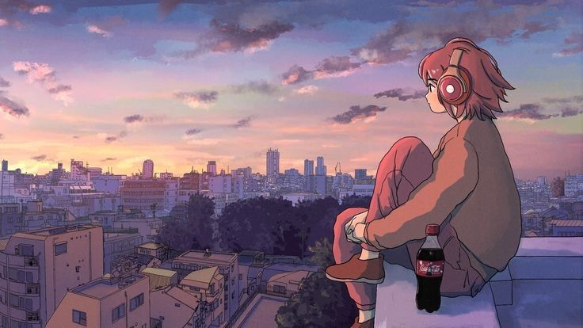
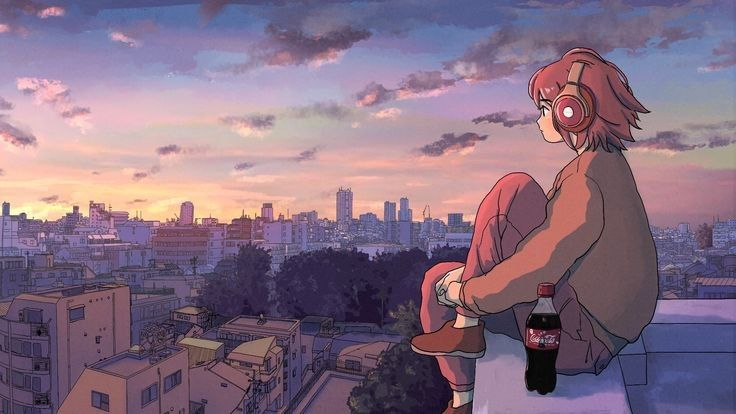

Johan Omar Resendiz Delabra
Mi Biografia
Mi nombre es Johan Omar Reséndiz Delabra. Tengo 19 años, nací el 15 de junio de 2005 y actualmente estoy estudiando Ingeniería en Software en la Facultad de Ingeniería Eléctrica y Mecánica. Me encuentro en el cuarto semestre de la carrera. .


Rasgos
Suelo ser una persona amable, y algunos de mis rasgos distintivos son que uso lentes, tengo una estatura promedio, visto de manera casual la mayor parte del tiempo y casi siempre llevo audífonos..
Pasatiempo
Me gusta jugar videojuegos, escuchar música y, ocasionalmente, jugar básquetbol. Disfruto especialmente jugar videojuegos con mis amigos, ya que tengo varias consolas que nos permiten pasar buenos momentos juntos. En cuanto a la música, mis géneros favoritos son el pop y el folklore. Aunque no practico básquetbol con frecuencia, suelo jugar al menos una vez a la semana..


Salir a caminar es otra de mis actividades favoritas, especialmente cuando escucho música y disfruto de los atardeceres y los paisajes de mi alrededor. Además de mi carrera en Ingeniería en Tecnología de Software (ITS), estoy aprendiendo japonés por mi cuenta, como parte de mi interés por ampliar mis conocimientos y habilidades.
 
